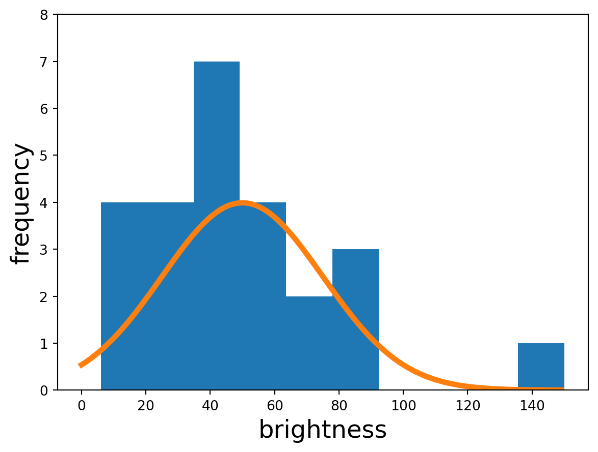
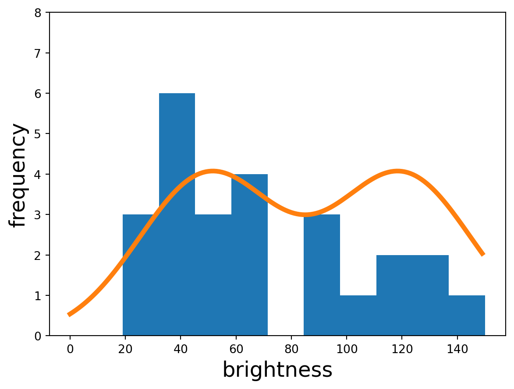
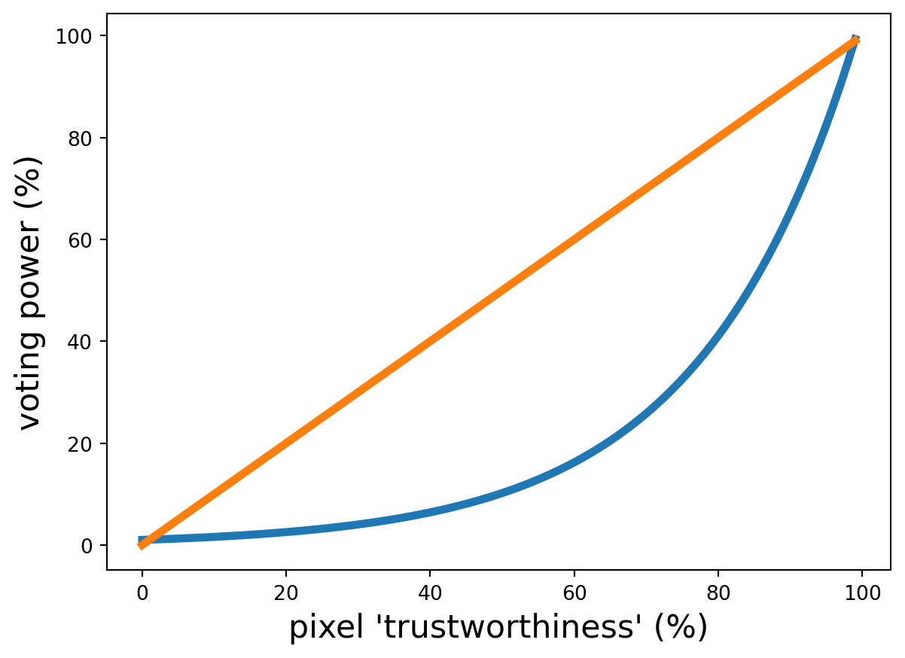

Speckle filtering (adaptive)
A problem with our previous filters was that they apply the same operation to every pixel without any further nuance (i.e. they are static). But perhaps we want a different filter applied to each pixel based on the nature of its local neighbourhood.
Earlier we may have used a filter like this one:
\[ \begin{bmatrix} .35 & 45 & .5 & .45 & .35 \\ .45 & 0.7 & 1 & 0.7 & .45 \\ .5 & 1 & 5 & 1 & .5 \\ .45 & 0.7 & 1 & 0.7 & .45 \\ .35 & .45 & .5 & .45 & .35 \\ \end{bmatrix} \]
Notice that this is essentially like holding a ‘vote’ on the new value of the centre pixel. The centre pixel itself has a strong ‘voting power’ of 5, while its closest neighbours have a voting power of 1, the next closest 0.7, and so on until the furthest away pixels have a meager voting power of 0.35. We could say that this filter wants to take an average in order to undo speckle, but ‘trusts’ far away pixels less, since they are probably more likely to belong to a different object than the centre pixel.
But this “smarter blur” still leaves us with the problem of pixels near boundaries getting ‘polluted’ by the values of nearby pixels which actually correspond to a different object. We could address this if we had some way of determining if we were probably near an edge. Consider two neighbourhoods, one corresponding to a single object (homogenous, e.g. some open water) and another corresponding to where two objects meet (edge, e.g. where grass becomes road):
Code
Code
Intuitively we can sort of see that the righthand group looks like it could contain an edge, but how do we objectively measure that? Looking at the statistics of each neighbourhood,


we see that the homogenous one is monomodal – a single ‘hump’, whereas the edge neighbourhood appears more bimodal – two humps. This makes sense, since in the edge neighbourhood there are two types of objects whose values are randomly deviated from via speckle.
If we wanted some individual number that reflected this, we could just grab the variance. The homogenous neighbourhood has a variance of 948, compared to the edge neighbourhood’s 1428. This makes sense since the edge neighbourhood has two different ‘types’ of pixels doing two different, unrelated things and are thus spread over a larger range of brightnesses. The edge neighbourhood is more varied.
So we can argue that if a neighbourhood has high variance, it’s more likely to be an edge neighbourhood. If it’s not an edge neighbourhood, there’s no reason not to use the blur filter to reduce speckle. And if it is, then we might want to weaken the blur to minimize edge bleeding. We could construct a new, adaptive filter:
\[ f = \alpha \begin{bmatrix} 0 & 0 & 0 & 0 & 0 \\ 0 & 0 & 0 & 0 & 0 \\ 0 & 0 & 1 & 0 & 0 \\ 0 & 0 & 0 & 0 & 0 \\ 0 & 0 & 0 & 0 & 0 \\ \end{bmatrix} + (1-\alpha) \begin{bmatrix} .35 & 45 & .5 & .45 & .35 \\ .45 & 0.7 & 1 & 0.7 & .45 \\ .5 & 1 & 5 & 1 & .5 \\ .45 & 0.7 & 1 & 0.7 & .45 \\ .35 & .45 & .5 & .45 & .35 \\ \end{bmatrix} \]
Here the smaller \(\alpha\) is, the stronger the blur. Since we identified variance as our measure for whether or not the neighbourhood may contain an edge (and thus whether to blur), we can just let \(\alpha = \frac{var}{mean^2}\). Here we’ve divided by the (squared) mean so that we can work in terms of a unitless fraction.
One last step we might take is to scale the whole thing exponentially. This essentially just shifts voting power even more strongly towards ‘trustworthy’ pixels:

Finally then, in other words the weight or ‘voting power’ assigned to a pixel is:
\[ w = e^{-D \alpha \kappa} \]
where \(D\) is the distance from the centre to that pixel, \(\alpha\) is the (fractional) neighbourhood variance and \(\kappa\) is just a number we can mess with to change how gnarly the exponential curve is.
Basically pixels are less ‘trustworthy’ if they are further away, and all pixels except the centre are less ‘trustworthy’ if the neighbourhood has a lot of variation. Then actual voting power is assigned exponentially to really penalize ‘untrustworthy’ pixels. The result is that in a seemingly homogenous neighbourhood, we blur per usual. In a neighbourhood that contains an edge, we blur just a little bit. And in a neighbourhood where it’s kind of hard to tell if it’s homogenous or an edge, we hedge our bets and blur moderately. This is an adaptive filter. In fact, we just built the well-known Frost Filter!